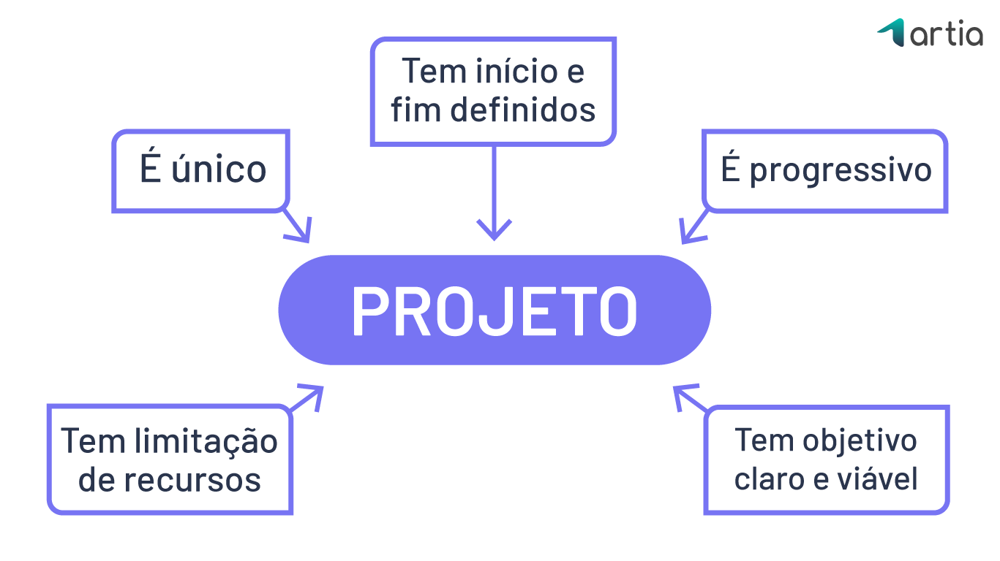
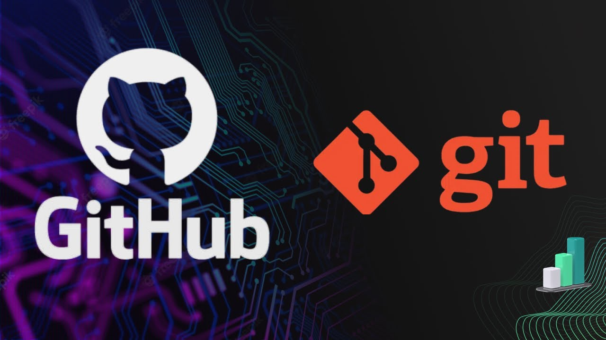

Quando criamos sites, estamos lidando com informações pessoais, dados sensíveis e a comunicação direta com os usuários.
Um dos pilares do desenvolvimento web é garantir que os dados coletados sejam usados de forma ética e legal.
Isso significa respeitar a privacidade, ser transparente sobre como as informações são armazenadas e seguras, e seguir
legislações como a LGPD (Lei Geral de Proteção de Dados). Além disso, a acessibilidade é fundamental: todos os usuários,
independentemente de suas limitações físicas, devem poder navegar e usar os sites sem barreiras.
Função e Utilidade da Gestão de Projetos

A gestão de projetos é como o mapa de uma viagem: sem ele, ficamos perdidos.
No desenvolvimento front-end, a organização é crucial para garantir que as entregas sejam feitas no prazo, com qualidade e conforme o esperado.
Ferramentas como o Trello ou o Jira ajudam a planejar cada etapa, dividindo o trabalho em tarefas menores, facilitando a colaboração e evitando erros ou retrabalhos.
Com uma boa gestão, os projetos fluem de forma mais tranquila e produtiva.
GitHub e Git

Git e GitHub são duas ferramentas essenciais para quem desenvolve. O Git é um sistema de controle de versão que permite salvar diferentes etapas do código de um projeto.
Isso significa que, caso algo dê errado, podemos "voltar no tempo" e recuperar versões anteriores.
Já o GitHub é como uma rede social de repositórios: ele hospeda o código e facilita a colaboração entre desenvolvedores,
permitindo que várias pessoas trabalhem no mesmo projeto de forma organizada e segura.
Função do Docker
O Docker é uma ferramenta que permite criar ambientes isolados e padronizados para desenvolver,
testar e rodar aplicações. Imagine que você está desenvolvendo um site no seu computador e tudo funciona perfeitamente.
Ao rodar esse site em outro computador, com configurações diferentes, os erros começam a aparecer. O Docker resolve isso, pois cria "caixas" chamadas containers,
onde o ambiente (sistema operacional, bibliotecas, configurações) é o mesmo em qualquer lugar. Assim, o código funciona da mesma forma, independentemente do computador.